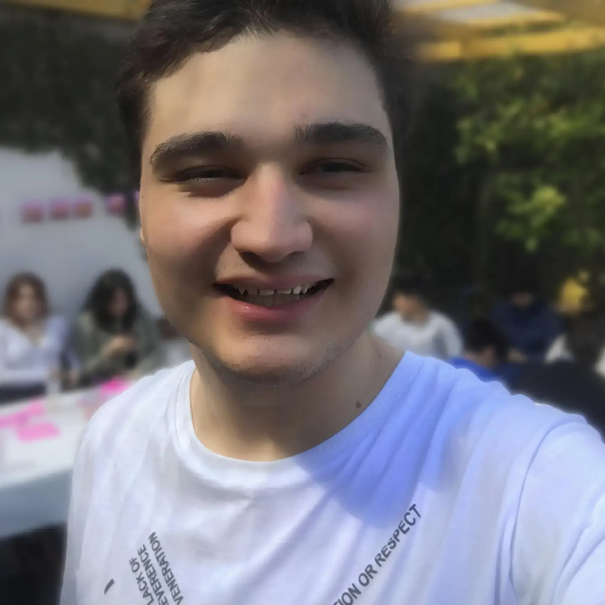

Patricio Tubio
desarrollador web • creador de contenido
años • mar del plata, argentina
desarrollador web • creador de contenido
años • mar del plata, argentina
📰 Soy generalista y creativo. Mi foco es el desarrollo web, sin embargo poseo gran experencia en otras áreas computacionales debido a mi trayecto autodidacta de hace varios años. Mi meta es desarrollar soluciones para la industria (y la humanidad 🚀).
📰 También realizo transmisiones en vivo y creo contenido para redes sociales con el objetivo de brindar entretenimiento y conocimiento a la audiencia, bajo mi marca perosonal "SoyPato".
